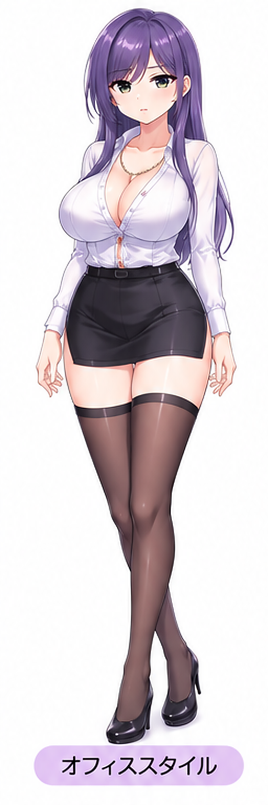

FUJISAKI SHINO
Relaxation Studio
紫乃と、ゆったり過ごすひととき。

😊 笑顔
衣装を選ぶ
8種類の衣装を切り替えられるで。
表情を選ぶ
表情の切り替え操作を搭載。表情専用画像の差し替えは次の仕上げで追加するで。
操作
紫乃を指でドラッグして移動。2本指でピンチすると拡大・縮小。タップでも表情が切り替わるで。
紫乃と、ゆったり過ごすひととき。

8種類の衣装を切り替えられるで。
表情の切り替え操作を搭載。表情専用画像の差し替えは次の仕上げで追加するで。
紫乃を指でドラッグして移動。2本指でピンチすると拡大・縮小。タップでも表情が切り替わるで。